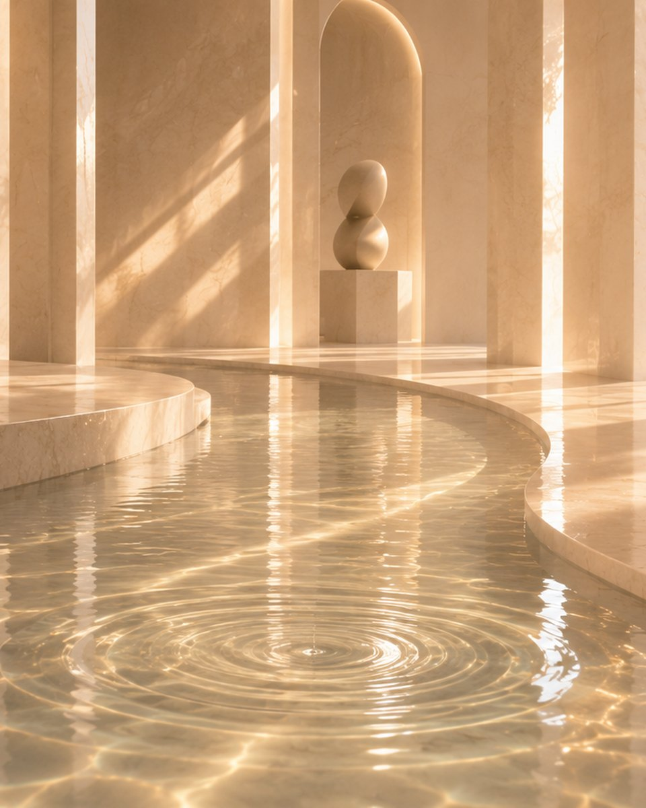
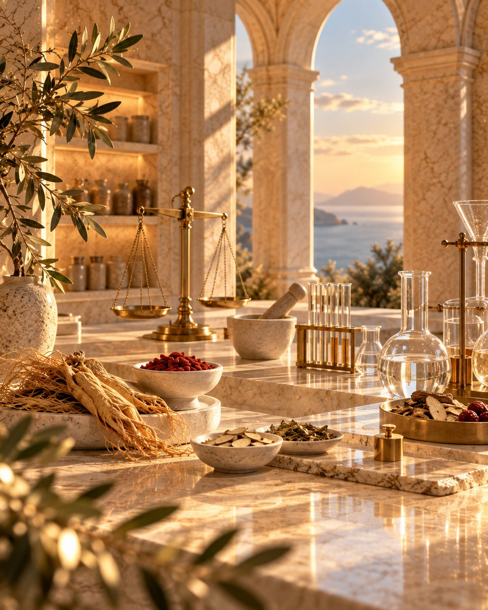
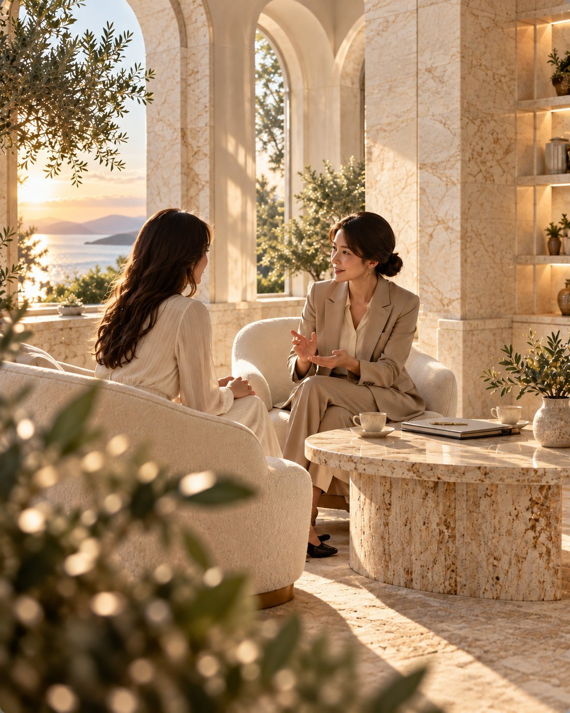

Walking Together
從初次來訪到後續回訪，GAIAN 以專人聯繫、個人規劃與持續關懷，陪您記錄變化，也記得您在意的事。
Our Belief
同行，是在您提出疑問時有人回應，
在需要安排時有人協助，
也在計畫調整時，願意再次聆聽您的想法。
我們珍惜每一次託付，
以具體行動延續這份關係。
Personalized Support
由健康顧問協助聯繫與流程安排，專業醫師提供醫療判斷，
讓您清楚知道接下來的安排，也知道有疑問時可以向誰詢問。


Personal Health Plan
看得懂安排，也清楚重點。
依需求與專業評估，計畫可包含：
以清楚的說明與紀錄，協助您掌握各項內容，並保留與專業醫師再次討論的空間。
預約健康諮詢
Dedicated Advisor
聯繫有人協助，醫療有專業把關。
顧問協助服務安排；
醫療判斷與治療建議由專業醫師提供。
Health Records & Privacy
記錄您的需要，也重視資訊的界線。
依您的同意與實際服務內容，協助整理預約、回訪及經授權的健康資訊，
作為後續溝通的參考。
資訊依約定目的與權限使用；醫療紀錄的保存與調閱，依相關法規及院所制度辦理。
了解隱私權政策Corporate Partnerships
把健康議題
帶進團隊交流
依企業需求，討論健康教育、專題講座與交流活動，讓同仁有機會認識實用知識，提出平日關心的問題。
合作內容與服務範圍，由雙方共同規劃。
洽詢企業合作Private Gatherings
在相聚之間
交換觀點與靈感
以健康、藝術與文化為主題，規劃小型交流與專題活動。
邀集不同領域的專業者，分享觀點與生活經驗。
欣賞作品，聆聽創作故事，
交流收藏與工藝之美。
由專業人員介紹健康議題，回應常見疑問。